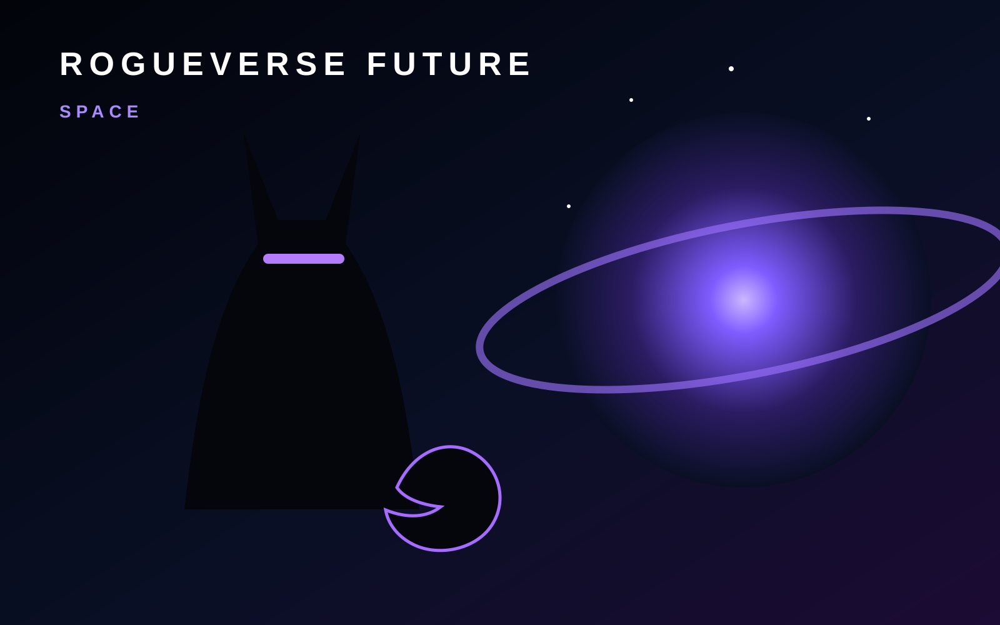

ROGUEVERSE FUTURE · SPACE
Space Is Becoming an Infrastructure Story
Launches get the spectacle, but satellites, communications, observation, navigation and long-duration systems are what turn access to orbit into something civilization can actually use.

Space exploration is often framed around destinations: the Moon, Mars, distant planets and whatever waits beyond them. But the practical future of space also depends on infrastructure close to Earth. Communications networks, weather observation, navigation, scientific instruments and orbital logistics already shape life on the ground.
The next era will be defined by how reliably people can move information, equipment and eventually humans through that environment without turning orbit into an unusable traffic jam.
Beyond the launch
A successful launch is the beginning of a mission, not the end. Space systems have to survive radiation, temperature extremes, vacuum, limited maintenance and long communication delays. Every kilogram, watt and component matters.
That makes space a systems-engineering story. Better launch economics can open doors, but progress also depends on propulsion, power, materials, robotics, software, communications and mission design improving together.
Exploration and responsibility
More access creates more opportunity for science, communications and planetary exploration. It also creates questions about debris, spectrum use, congestion, environmental impact and who gets to set the rules for shared orbital resources.
RogueVerse Future will separate the inspiring parts of spaceflight from the practical realities that determine whether ambitious missions can become sustainable programs.
What RogueVerse is watching
Our Space lane follows launch systems, satellites, astronomy, planetary science, lunar infrastructure, exploration robotics and the growing network of technologies that make activity beyond Earth possible.
The long-term goal may be a spacefaring civilization. The near-term work is less romantic and more important: building the dependable systems required to keep showing up.
RogueVerse Future Primer · This page defines the Space coverage lane and will connect to reporting, analysis and deeper features as they are published.